06 Aug
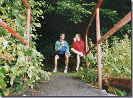
Toen we gingen slapen was het uitzicht al niet bijzonder, maar vanmorgen was het echt bar. Tien uur is wellicht een mooie tijd om op te staan, maar waarom zou je, als het regent? Volgens mij stoppen ze in Spa gewoon regenwater in die flessen.
Francorchamps ligt echt hoog, maar wel leuke foto’s gemaakt in de pitstraat. Tom kan maar geen genoeg krijgen van de Williams stal, die overigens net als alle andere stallen weinig meer te bieden heeft dan een leeg hok met een vochtige betonvloer.
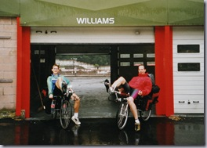
Verder maar zoveel mogelijk grote wegen genomen, want wat een heuvels zeg, daar in de Ardennen. De afgelopen dagen hadden steeds een thema, een gespreksonderwerp dat ons gemakkelijk honderd kilometer bezighield. Vandaag was themaloos aangezien we nergens echt relaxed naast elkaar konden fietsen.
In Luxemburg werd het weer gelukkig beter en uiteindelijk kwamen we in de zon op een camping in Diekirch aan. Daar hebben we het thematekort ruimschoots opgevangen bij een stevige maaltijd met een fles wijn en een romantisch kaarsje toe. Hopelijk lig Tom niet al te lang wakker van m’n provocaties aangaande z’n prille relatie.
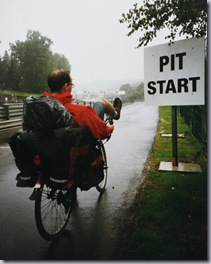
De heldendaad van vandaag staat op Tom’s naam, net in Luxemburg haalde hij op z’n volgepakte ligfietsje twee wielrenners in. Ha! Hahaaha! Ha ha! Er kon niet eens een complimentje af. Onze maximum snelheid komt al aardig dicht bij de 70 km/h.
05 Aug
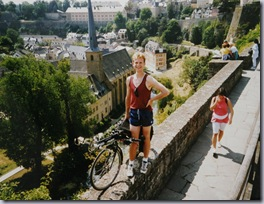
"Ding dong, het wordt een stralende dag vandaag, de zon schijnt al dus het is tijd om op te staan"
Wat een k*tcamping. Op zich is z’n frustratie wel voor te stellen want de kraandopjes zijn gejat, maar moet ik daarvoor met luidsprekergeschal m’n tent uit gedingdongd worden?!
De toeristische stop was vandaag in Luxemburg. Op het heetst van de dag in de koele casematten onde ruine van het slot verdwaald. Werd het toch nog zweten.
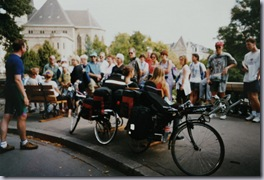
Verder vormden wij zelf de voornaamste toeristische attractie. Het begon al ‘s morgens op de dingdong camping waar we met kinnen op knieen werden nagestaard. Enkele kilometers verder maakte Tom een klein jongetje dolgelukkig door ‘m op z’n fiets te helpen. In de stad Luxemburg waren we geliefd onderwerp van menig vakantiekiekje en nam een lokale gids onze fietsjes in haar rondleiding op.
Op het terras in Metz werd ons de banden van de fiets gevraagd en op de camping werd ik bestormd door een dozijn Britse hooligans van tussen de 3 en 12 jaar. Daarna kon ik gelukkig ontsnappen naar de douche terwijl Tom een groep Hollanders te woord stond en de banden weer op z’n fiets legde.
02 Aug
Zon! Vroeg op! Verbranden!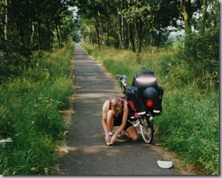
Even oefenen hoe het is om Nederland uit te fietsen. Als we ten zuiden van Valksenwaard Belgie infietsen belooft het weinig goeds. Gelukkig heb ik m’n studie voor fietsenmaker afgemaakt en weet ik, krap een kilometer na de grens, weer netjes wat nieuwe schroefdraad aan Tom’s achteras te vijlen. Met een zakmes. Fietsend is de zuid-willemsvaart tenslotte al ruim lang genoeg.
Gelukkig kunnen we in Maastricht op vertrouwde bodem naar een fietsenmaker met eigen praktijk en krijgt Tom’s fietsje een as-transplantatie. De Vrijthof verplichtte natuurlijk tot een foto en een witbiertje, 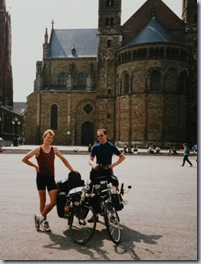
dus het wordt al aardig laat als we op weg gaan naar de eerste heuveltjes.
Nog een beetje naschroeiend in een laat zonnetje steken we bij Slenaken de grens definitief over. Oei, wat vallen die hellinkjes tegen. Nu al ons lichtste verzet nodig? Kwalijker is nog dat de camping alleen op de kaart bestaat. Inwoners van het dorpje vlak bij Verviers vertellen ons dat we een heel eind terug moeten voor een camping.
Bekijk ‘t maar.
In Verviers eten we ons, nu al dagelijkse, patatje en wachten we tot het donker wordt. Dat moet, anders is wildkamperen zeer onverstandig. Met voor- en achterlicht op rijden we richting Spa, wie weet komen we een camping tegen, anders altijd wel een stuk bos…
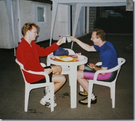
Je kent dat vast wel, al die keren dat de situatie hopeloos lijkt, maar dat je uiteindelijk toch weer lekker onder een warme douche staat en je tentje op een valk stukje gras op je staat te wachten. Zo ook dit maal.
De stand is trouwens 1-1. Ik een keer tussen de Markt en de Vrijthof in Maastricht. Tom een keer onder het meewarig oog van twee Waalse schonen die ons naar de camping escorteerden. Het aanblik van die heel grote tramrails met knipperende lampen en slagbomen die naar beneden kwamen werd ‘m even te veel…
02 Aug
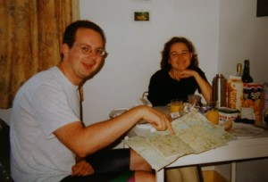
Zo’n ontbijt en zo’n douche krijgen we voorlopig niet meer, daar kunnen we maar beter goed van genieten. Tot een uur of twaalf bijvoorbeeld, anders kom je nooit meer weg.
En daar gaan Tom en ik. Vanaf nu aangewezen op fiets, tent en geldbuidel. Wel wat treurig denk ik terug aan hoe Marjan ons uitzwaaide. Hoezeer we ook wisten dat het zou komen, hoe vaak we ook hadden bedacht hoe het zou zijn, het echte vertrek kwam toch hard aan.
Het weerbericht was heel gepast voor deze gelegenheid. Regen, regen, regen en in het zuiden vooral onweer. Maar zoals vaker op lange reizen, als thuis wat verder achter je ligt en de vakantie steeds meer vorm krijgt, dan trekken de donkere wolken weg en schijnt toch opeens de zon.
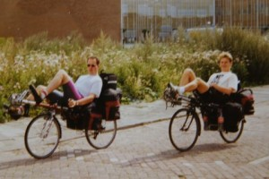
Bij Den Bosch zien we hoe drie jongens met hun vliegers proberen om wat ampere’s te vangen. De wolken hangen laag en hun lijnen zijn lang genoeg, maar we raden ze toch aan om een batterij te kopen.
In de buurt van Valkenswaard wordt het tijd een camping te vinden. Mijn kaart wijst me drie maal de verkeerde weg, maar een volslagen dronkaard in het eerste dorpje wijst ons nauwkeurig de weg naar de dichtsbijzijnde camping. Het geeft me weinig vertrouwen in de makers van de kaart.
De camping zelf is zeer degelijk, we zien veel geraniums, kleuren TV’s en een voliere met … katten! Waar zijn die parkieten dan?
02 Aug
Hoera! Eindelijk op weg! Als echte wereldreizigers slaan we na maanden voorbereiding onze vertrouwde voordeur achter ons dicht en stappen vol vertrouwen de Grote Vrijheid tegemoet. Maar, wacht even, wat is dat? Het regent! Daarmee hadden we even geen rekening gehouden.
Een uurtje later rijden we, acht vuilniszakken en een stapeltje boterhammen rijker, alsnog ons doel tegemoet. Inpakken is een serieuze zaak, dus het is al een uur of zes en Utrecht is een prima doel voor het eerste ritje.
Marjan heeft al haar goedheid aangewend voor een heerlijke maaltijd, dus zo kunnen we na een vertrouwd avondje in een goed bed rustig wennen aan het idee van vakantie.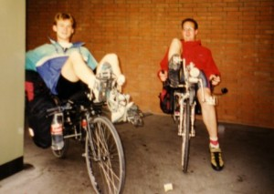
01 Jul
I love starting a new blog. On one hand the thought of a hungry blog sitting there growling for new posts presses on your shoulders like a spilling book shelf. On the other hand the thought of the unlimited journey of words, thoughts and stories makes you as happy as a child about to leave on a trip to the beach.
Thanks Harry for installing wordpress and setting up Biketravellers.com. Under the current load it seems to hold out fine, I guess you just survived the first 30 minutes after installation. Where are you hosting? I’m about to switch to a new hoster, as resurrecting my tomcat out of the dark depths of my current host’s swap space takes forever.
As for this blog, expect me back at some point. Definitely when I suddenly find myself with lots of time and nothing at hand, hopefully much sooner. I don’t have many bike plans ahead of me, so I’ll have to dig up some old notes and pix, but I’ll do my best!